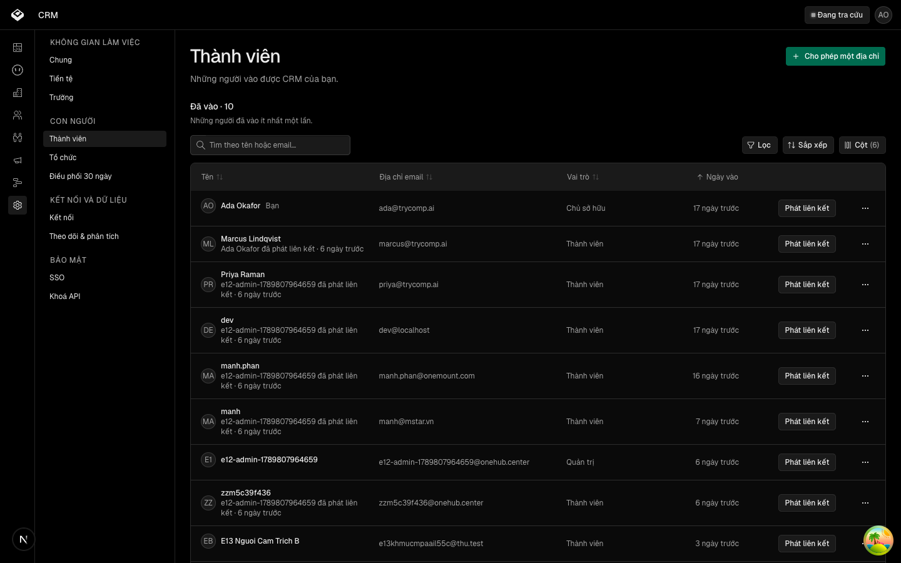

| Eval | Tiêu chí | Loại | Verdict | run_id | verified_at |
|---|---|---|---|---|---|
| E1 | AC-1 | script | PASS | minted-thanh-vien-hai-khoi-cung-khuon-E1-r2 | 2026-09-25T12:36:20Z |
| E2 | AC-2 | script | PASS | minted-thanh-vien-hai-khoi-cung-khuon-E2-r2 | 2026-09-25T12:36:20Z |
| E3 | AC-3 | script | PASS | minted-thanh-vien-hai-khoi-cung-khuon-E3-r2 | 2026-09-25T12:36:20Z |
| E4 | AC-4 | script | PASS | minted-thanh-vien-hai-khoi-cung-khuon-E4-r2 | 2026-09-25T12:36:20Z |
| E5 | AC-5 | script | PASS | minted-thanh-vien-hai-khoi-cung-khuon-E5-r2 | 2026-09-25T12:36:20Z |
| E6 | AC-6 | script | PASS | minted-thanh-vien-hai-khoi-cung-khuon-E6-r2 | 2026-09-25T12:36:20Z |
| E7 | AC-7 | script | PASS | minted-thanh-vien-hai-khoi-cung-khuon-E7-r2 | 2026-09-25T12:36:20Z |
| E8 | AC-8 | test | PASS | minted-thanh-vien-hai-khoi-cung-khuon-E8-r2 | 2026-09-25T12:36:20Z |
| E9 | AC-9 | test | PASS | minted-thanh-vien-hai-khoi-cung-khuon-E9-r2 | 2026-09-25T12:36:20Z |
| E10 | AC-10 | script | PASS | minted-thanh-vien-hai-khoi-cung-khuon-E10-r2 | 2026-09-25T12:36:20Z |
| E11 | AC-11 | script | PASS | minted-thanh-vien-hai-khoi-cung-khuon-E11-r2 | 2026-09-25T12:36:20Z |
| E12 | AC-12 | script | PASS | minted-thanh-vien-hai-khoi-cung-khuon-E12-r2 | 2026-09-25T12:36:20Z |
| E13 | AC-12 | script | PASS | minted-thanh-vien-hai-khoi-cung-khuon-E13-r2 | 2026-09-25T12:36:20Z |
| E14 | AC-13 | script | PASS | minted-thanh-vien-hai-khoi-cung-khuon-E14-r2 | 2026-09-25T12:36:20Z |
| E15 | AC-1 | script | PASS | design-gate-934956e1c5 | 2026-09-25T12:36:20Z |
| E16 | AC-14 | ui-check | PASS | minted-thanh-vien-hai-khoi-cung-khuon-E16-r2 | 2026-09-25T12:36:20Z |
| E17 | AC-16 | script | PASS | minted-thanh-vien-hai-khoi-cung-khuon-E17-r2 | 2026-09-25T12:36:20Z |
| E18 | AC-15 | script | PASS | minted-thanh-vien-hai-khoi-cung-khuon-E18-r2 | 2026-09-25T12:36:20Z |
AC-1: Given 10 thành viên và từ 15 lời cho phép đang chờ, When quản trị mở trang ở 1440×900, 768×1024 và 375×812, Then vỏ bảng của hai khối có cùng độ dày viền trên (≥ 1px), cùng bán kính góc, hàng tiêu đề cột cùng màu nền (không trong suốt), và ô dữ liệu cùng cỡ chữ.
-- tiền đề làn đo: đã dọn contextDevApiKey -- tiền đề làn đo: đã dọn ảnh đại diện -- tiền đề làn đo: đã dọn tên miền được phép (lệnh chung do-khoi.mjs bao phủ E1,E2,E3,E4,E5,E6,E7,E10,E13,E14,E18 — kết luận cuối "46 DUNG, 0 SAI — ma thoat 0")
AC-2: Given cùng dữ liệu và ba khổ của AC-1 (vỏ bảng dưới ở vị trí cuộn ngang 0), When trang tải xong, Then mép trái nội dung của ô cột đầu — cả ô tiêu đề lẫn ô dữ liệu hàng đầu — ở hai bảng lệch nhau không quá 1px.
-- tiền đề làn đo: đã dọn contextDevApiKey -- tiền đề làn đo: đã dọn ảnh đại diện -- tiền đề làn đo: đã dọn tên miền được phép (lệnh chung do-khoi.mjs bao phủ E1,E2,E3,E4,E5,E6,E7,E10,E13,E14,E18 — kết luận cuối "46 DUNG, 0 SAI — ma thoat 0")
AC-3: (cross-layer) Given cùng dữ liệu, When quản trị mở trang ở 1440×900 và chưa cuộn, Then nút «Cho phép một địa chỉ» nằm trong vùng hành động của đầu trang, trọn trong khung nhìn, và điểm giữa nút trả về chính nút; bấm nút mở hộp «Cho phép một địa chỉ», và cho phép một địa chỉ mới thì hàng của địa chỉ đó hiện trong khối dưới, cơ sở dữ liệu có đúng một lời cho phép đang chờ cho địa chỉ đó, và số đếm của khối dưới tăng một.
-- tiền đề làn đo: đã dọn contextDevApiKey -- tiền đề làn đo: đã dọn ảnh đại diện -- tiền đề làn đo: đã dọn tên miền được phép (lệnh chung do-khoi.mjs bao phủ E1,E2,E3,E4,E5,E6,E7,E10,E13,E14,E18 — kết luận cuối "46 DUNG, 0 SAI — ma thoat 0")
AC-4: Given cùng dữ liệu, When trang tải xong ở 1440×900, Then tiêu đề hai khối là «Đã vào · N» và «Được phép vào · M», với N là số thành viên và M là số lời cho phép đang chờ đọc từ cơ sở dữ liệu; mỗi khối là một `section` có tên trỏ tới chính tiêu đề đó; và khi ô tìm của khối trên lọc còn một người, tiêu đề vẫn là «Đã vào · N».
-- tiền đề làn đo: đã dọn contextDevApiKey -- tiền đề làn đo: đã dọn ảnh đại diện -- tiền đề làn đo: đã dọn tên miền được phép (lệnh chung do-khoi.mjs bao phủ E1,E2,E3,E4,E5,E6,E7,E10,E13,E14,E18 — kết luận cuối "46 DUNG, 0 SAI — ma thoat 0")
AC-5: Given cùng dữ liệu, When quản trị mở trang ở 375×812, Then cả `document` lẫn vùng cuộn `main` không tràn ngang; vỏ bảng dưới cuộn ngang được bên trong chính nó; và sau khi lăn con lăn ngang trong vỏ đó, nút «…» của một hàng nằm trọn trong vỏ.
-- tiền đề làn đo: đã dọn contextDevApiKey -- tiền đề làn đo: đã dọn ảnh đại diện -- tiền đề làn đo: đã dọn tên miền được phép (lệnh chung do-khoi.mjs bao phủ E1,E2,E3,E4,E5,E6,E7,E10,E13,E14,E18 — kết luận cuối "46 DUNG, 0 SAI — ma thoat 0")
AC-6: (cross-layer) Given cùng dữ liệu, When quản trị xem khối dưới ở 1440×900, Then không có nút chữ «Rút» hiện sẵn; mỗi hàng có nút «Phát liên kết» hiện sẵn và một nút «…» có tên «Hành động với <địa chỉ>»; bấm «…» mở menu có mục «Rút» kiểu phá huỷ; chọn mục đó mở hộp «Rút lời cho phép này?»; xác nhận thì hàng biến mất, số đếm giảm một, và lời cho phép đó không còn ở trạng thái chờ trong cơ sở dữ liệu.
-- tiền đề làn đo: đã dọn contextDevApiKey -- tiền đề làn đo: đã dọn ảnh đại diện -- tiền đề làn đo: đã dọn tên miền được phép (lệnh chung do-khoi.mjs bao phủ E1,E2,E3,E4,E5,E6,E7,E10,E13,E14,E18 — kết luận cuối "46 DUNG, 0 SAI — ma thoat 0")
AC-7: Given cùng dữ liệu, When trang tải xong ở 1440×900, Then ở khối dưới: ô «Vai trò khi vào» và «Người cho phép» có màu chữ bằng màu chữ tiêu đề cột; cột «Cho phép lúc» căn phải ở cả ô tiêu đề và ô dữ liệu; và cỡ chữ ô dữ liệu bằng cỡ chữ ô dữ liệu của khối trên.
-- tiền đề làn đo: đã dọn contextDevApiKey -- tiền đề làn đo: đã dọn ảnh đại diện -- tiền đề làn đo: đã dọn tên miền được phép (lệnh chung do-khoi.mjs bao phủ E1,E2,E3,E4,E5,E6,E7,E10,E13,E14,E18 — kết luận cuối "46 DUNG, 0 SAI — ma thoat 0")
AC-8: Given quản trị và truy vấn «Được phép vào» chưa trả về, When khối dưới được vẽ, Then khối có mặt với tiêu đề «Được phép vào» và ít nhất ba ô khung xương, và không hiện câu «Chỉ những người ở bảng trên vào được…».
0 fail 4 expect() calls Ran 2 tests across 1 file. [527.00ms]
AC-9: Given quản trị và không có lời cho phép nào đang chờ, When khối dưới được vẽ, Then tiêu đề là «Được phép vào · 0», câu rỗng nằm trong `CardTableEmpty`, và khối không có bảng.
0 fail 12 expect() calls Ran 4 tests across 1 file. [636.00ms]
AC-10: Given một người vai «Thành viên» (không có quyền quản trị), When họ mở trang ở 1440×900, Then họ thấy «Đã vào · N», không thấy nút «Cho phép một địa chỉ» ở đâu trên trang, và không thấy khối «Được phép vào».
-- tiền đề làn đo: đã dọn contextDevApiKey -- tiền đề làn đo: đã dọn ảnh đại diện -- tiền đề làn đo: đã dọn tên miền được phép (lệnh chung do-khoi.mjs bao phủ E1,E2,E3,E4,E5,E6,E7,E10,E13,E14,E18 — kết luận cuối "46 DUNG, 0 SAI — ma thoat 0")
AC-11: Given từ điển sản phẩm, When đọc `CONTEXT.md` và `apps/app/lib/messages/settings-thanh-vien.ts`, Then từ điển có mục «Đã vào» và mục «Được phép vào», mỗi mục có dòng `_Avoid_` và dòng «Vì sao»; và chuỗi tiếng Việt của hai tiêu đề khối đúng bằng hai chữ đó.
DUNG bang.tieuDe la "Đã vào", mong "Đã vào" DUNG duocPhepVao.tieuDe la "Được phép vào", mong "Được phép vào" 11 DUNG, 0 SAI — ma thoat 0
AC-12: Given cây sau vòng này, When chạy lại bàn đo đã ký của `bang-thanh-vien-giu-hang` (`ttv_do_bang`), Then nó đạt trọn như lúc ký; và trang chỉ có một `DataTable` (một ô tìm trong vùng nội dung).
-- tiền đề làn đo: đã dọn contextDevApiKey -- tiền đề làn đo: đã dọn ảnh đại diện -- tiền đề làn đo: đã dọn tên miền được phép (bản đồ đã ký của bang-thanh-vien-giu-hang, chạy lại trên cây mới — kết luận "30 DUNG, 0 SAI — ma thoat 0")
AC-12: Given cây sau vòng này, When chạy lại bàn đo đã ký của `bang-thanh-vien-giu-hang` (`ttv_do_bang`), Then nó đạt trọn như lúc ký; và trang chỉ có một `DataTable` (một ô tìm trong vùng nội dung).
-- tiền đề làn đo: đã dọn contextDevApiKey -- tiền đề làn đo: đã dọn ảnh đại diện -- tiền đề làn đo: đã dọn tên miền được phép (lệnh chung do-khoi.mjs bao phủ E1,E2,E3,E4,E5,E6,E7,E10,E13,E14,E18 — kết luận cuối "46 DUNG, 0 SAI — ma thoat 0")
AC-13: Given bàn đo đã gieo và tạo lời cho phép thử, When lượt đo kết thúc — đạt, trượt, hay hỏng giữa chừng — Then không còn lời cho phép nào mang tiền tố của bàn đo, và tập lời cho phép có sẵn trước lượt còn nguyên cả số lẫn trạng thái.
-- tiền đề làn đo: đã dọn contextDevApiKey -- tiền đề làn đo: đã dọn ảnh đại diện -- tiền đề làn đo: đã dọn tên miền được phép (lệnh chung do-khoi.mjs bao phủ E1,E2,E3,E4,E5,E6,E7,E10,E13,E14,E18 — kết luận cuối "46 DUNG, 0 SAI — ma thoat 0")
AC-1: Given 10 thành viên và từ 15 lời cho phép đang chờ, When quản trị mở trang ở 1440×900, 768×1024 và 375×812, Then vỏ bảng của hai khối có cùng độ dày viền trên (≥ 1px), cùng bán kính góc, hàng tiêu đề cột cùng màu nền (không trong suốt), và ô dữ liệu cùng cỡ chữ.
"hits": [], "findings": []
AC-14: Given ảnh chụp thật của lượt đo, When người xem mở ảnh đầu trang và ảnh chỗ nối hai khối ở mỗi khổ, ảnh menu «…» đang mở và ảnh của người không có quyền, Then nhìn thấy hai khối cùng một kiểu thẻ — tiêu đề có số đếm, vỏ bảng viền bo, tiêu đề cột nền xám — nút «Cho phép một địa chỉ» ở đầu trang, và «Rút» chỉ nằm trong menu.

AC-16: Given các tệp của trang Thành viên sau vòng này, When soi mã, Then không component `@crm/ui` nào ở chỗ gọi mang lớp đổi viền, góc, nền hay bóng, các component khung (`Card`, `CardHeader`, `CardTitle`, `CardDescription`, `CardTable`, `DataTable`) không nhận `className`, và chuỗi lớp của `CardTable` trong `packages/ui` giữ nguyên.
GHI CHU soi 10 tep, 92 phan tu @crm/ui 21 DUNG, 0 SAI — ma thoat 0
AC-15: (cross-layer) Given hộp «Cho phép một địa chỉ» mở từ đầu trang, When quản trị cho phép một địa chỉ đã có trong danh sách chờ, Then hộp vẫn mở, thông điệp lỗi của API nằm trong hộp, cơ sở dữ liệu không thêm lời cho phép nào, và tiêu đề khối dưới giữ nguyên số đếm.
-- tiền đề làn đo: đã dọn contextDevApiKey -- tiền đề làn đo: đã dọn ảnh đại diện -- tiền đề làn đo: đã dọn tên miền được phép (lệnh chung do-khoi.mjs bao phủ E1,E2,E3,E4,E5,E6,E7,E10,E13,E14,E18 — kết luận cuối "46 DUNG, 0 SAI — ma thoat 0")